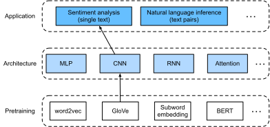
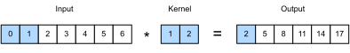
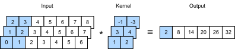
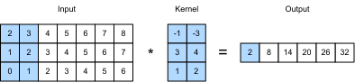
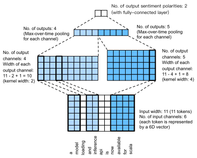

Phân tích cảm xúc: Sử dụng mạng nơ-ron tích chập¶
Trong chap_cnn, chúng ta đã khảo sát các cơ chế để xử lý dữ liệu ảnh hai chiều bằng CNN hai chiều, được áp dụng cho các đặc trưng cục bộ như các điểm ảnh lân cận. Dù ban đầu được thiết kế cho thị giác máy tính, CNN cũng được sử dụng rộng rãi trong xử lý ngôn ngữ tự nhiên. Nói đơn giản, hãy xem bất kỳ chuỗi văn bản nào như một ảnh một chiều. Theo cách này, CNN một chiều có thể xử lý các đặc trưng cục bộ như \(n\)-gram trong văn bản.
Trong phần này, chúng ta sẽ dùng mô hình textCNN để minh họa cách thiết kế một kiến trúc CNN cho việc biểu diễn một văn bản đơn lẻ [Kim.2014]. So với fig_nlp-map-sa-rnn dùng kiến trúc RNN với tiền huấn luyện GloVe cho phân tích cảm xúc, khác biệt duy nhất trong fig_nlp-map-sa-cnn nằm ở lựa chọn kiến trúc.

#@tab mxnet
from d2l import mxnet as d2l
from mxnet import gluon, init, np, npx
from mxnet.gluon import nn
npx.set_np()
batch_size = 64
train_iter, test_iter, vocab = d2l.load_data_imdb(batch_size)
#@tab pytorch
from d2l import torch as d2l
import torch
from torch import nn
batch_size = 64
train_iter, test_iter, vocab = d2l.load_data_imdb(batch_size)
Tích chập một chiều¶
Trước khi giới thiệu mô hình, hãy xem tích chập một chiều hoạt động như thế nào. Cần nhớ rằng nó chỉ là một trường hợp đặc biệt của tích chập hai chiều dựa trên phép toán tương quan chéo.

Như trong fig_conv1d, ở trường hợp một chiều, cửa sổ tích chập trượt từ trái sang phải dọc theo tensor đầu vào. Trong khi trượt, tensor con đầu vào (ví dụ, \(0\) và \(1\) trong fig_conv1d) nằm trong cửa sổ tích chập tại một vị trí nhất định và tensor kernel (ví dụ, \(1\) và \(2\) trong fig_conv1d) được nhân theo từng phần tử. Tổng của các phép nhân này cho giá trị vô hướng duy nhất (ví dụ, \(0\times1+1\times2=2\) trong fig_conv1d) tại vị trí tương ứng của tensor đầu ra.
Chúng ta triển khai tương quan chéo một chiều trong hàm corr1d sau đây.
Với tensor đầu vào X
và tensor kernel K,
hàm trả về tensor đầu ra Y.
#@tab all
def corr1d(X, K):
w = K.shape[0]
Y = d2l.zeros((X.shape[0] - w + 1))
for i in range(Y.shape[0]):
Y[i] = (X[i: i + w] * K).sum()
return Y
Chúng ta có thể xây dựng tensor đầu vào X và tensor kernel K từ fig_conv1d để kiểm chứng đầu ra của triển khai tương quan chéo một chiều ở trên.
Với bất kỳ đầu vào một chiều nào có nhiều kênh, kernel tích chập cần có cùng số kênh đầu vào. Sau đó, với mỗi kênh, thực hiện một phép tương quan chéo trên tensor một chiều của đầu vào và tensor một chiều của kernel tích chập, rồi cộng các kết quả trên tất cả kênh để tạo ra tensor đầu ra một chiều. fig_conv1d_channel minh họa một phép tương quan chéo một chiều với 3 kênh đầu vào.

Chúng ta có thể triển khai phép tương quan chéo một chiều cho nhiều kênh đầu vào và kiểm chứng kết quả trong fig_conv1d_channel.
#@tab all
def corr1d_multi_in(X, K):
# First, iterate through the 0th dimension (channel dimension) of `X` and
# `K`. Then, add them together
return sum(corr1d(x, k) for x, k in zip(X, K))
X = d2l.tensor([[0, 1, 2, 3, 4, 5, 6],
[1, 2, 3, 4, 5, 6, 7],
[2, 3, 4, 5, 6, 7, 8]])
K = d2l.tensor([[1, 2], [3, 4], [-1, -3]])
corr1d_multi_in(X, K)
Lưu ý rằng các phép tương quan chéo một chiều nhiều kênh đầu vào tương đương với các phép tương quan chéo hai chiều một kênh đầu vào. Để minh họa, một dạng tương đương của phép tương quan chéo một chiều nhiều kênh đầu vào trong fig_conv1d_channel là phép tương quan chéo hai chiều một kênh đầu vào trong fig_conv1d_2d, trong đó chiều cao của kernel tích chập phải bằng chiều cao của tensor đầu vào.

Cả hai đầu ra trong fig_conv1d và fig_conv1d_channel đều chỉ có một kênh. Tương tự các tích chập hai chiều với nhiều kênh đầu ra được mô tả trong subsec_multi-output-channels, chúng ta cũng có thể chỉ định nhiều kênh đầu ra cho tích chập một chiều.
Max-over-time pooling¶
Tương tự, chúng ta có thể dùng pooling để trích xuất giá trị cao nhất từ các biểu diễn chuỗi làm đặc trưng quan trọng nhất qua các bước thời gian. Max-over-time pooling được dùng trong textCNN hoạt động giống global max-pooling một chiều [Collobert.Weston.Bottou.ea.2011]. Với một đầu vào nhiều kênh trong đó mỗi kênh lưu các giá trị tại các bước thời gian khác nhau, đầu ra ở mỗi kênh là giá trị lớn nhất của kênh đó. Lưu ý rằng max-over-time pooling cho phép số bước thời gian khác nhau ở các kênh khác nhau.
Mô hình textCNN¶
Sử dụng tích chập một chiều và max-over-time pooling, mô hình textCNN nhận các biểu diễn token đã tiền huấn luyện riêng lẻ làm đầu vào, sau đó thu được và biến đổi các biểu diễn chuỗi cho ứng dụng downstream.
Với một chuỗi văn bản đơn lẻ có \(n\) token được biểu diễn bởi các vector \(d\) chiều, chiều rộng, chiều cao và số kênh của tensor đầu vào lần lượt là \(n\), \(1\) và \(d\). Mô hình textCNN biến đổi đầu vào thành đầu ra như sau:
- Định nghĩa nhiều kernel tích chập một chiều và thực hiện riêng các phép tích chập trên đầu vào. Các kernel tích chập với độ rộng khác nhau có thể bắt các đặc trưng cục bộ giữa những số lượng token lân cận khác nhau.
- Thực hiện max-over-time pooling trên tất cả kênh đầu ra, rồi nối tất cả đầu ra pooling vô hướng thành một vector.
- Biến đổi vector đã nối thành các hạng mục đầu ra bằng tầng kết nối đầy đủ. Có thể dùng dropout để giảm overfitting.

fig_conv1d_textcnn minh họa kiến trúc mô hình của textCNN bằng một ví dụ cụ thể. Đầu vào là một câu có 11 token, trong đó mỗi token được biểu diễn bởi một vector 6 chiều. Vì vậy chúng ta có một đầu vào 6 kênh với chiều rộng 11. Định nghĩa hai kernel tích chập một chiều có độ rộng 2 và 4, với lần lượt 4 và 5 kênh đầu ra. Chúng tạo ra 4 kênh đầu ra với chiều rộng \(11-2+1=10\) và 5 kênh đầu ra với chiều rộng \(11-4+1=8\). Dù 9 kênh này có chiều rộng khác nhau, max-over-time pooling cho một vector 9 chiều đã nối, cuối cùng được biến đổi thành một vector đầu ra 2 chiều cho dự đoán cảm xúc nhị phân.
Định nghĩa mô hình¶
Chúng ta triển khai mô hình textCNN trong lớp sau. So với mô hình RNN hai chiều trong sec_sentiment_rnn, ngoài việc thay các tầng hồi tiếp bằng các tầng tích chập, chúng ta cũng dùng hai tầng embedding: một tầng với trọng số có thể huấn luyện và tầng còn lại với trọng số cố định.
#@tab mxnet
class TextCNN(nn.Block):
def __init__(self, vocab_size, embed_size, kernel_sizes, num_channels,
**kwargs):
super(TextCNN, self).__init__(**kwargs)
self.embedding = nn.Embedding(vocab_size, embed_size)
# The embedding layer not to be trained
self.constant_embedding = nn.Embedding(vocab_size, embed_size)
self.dropout = nn.Dropout(0.5)
self.decoder = nn.Dense(2)
# The max-over-time pooling layer has no parameters, so this instance
# can be shared
self.pool = nn.GlobalMaxPool1D()
# Create multiple one-dimensional convolutional layers
self.convs = nn.Sequential()
for c, k in zip(num_channels, kernel_sizes):
self.convs.add(nn.Conv1D(c, k, activation='relu'))
def forward(self, inputs):
# Concatenate two embedding layer outputs with shape (batch size, no.
# of tokens, token vector dimension) along vectors
embeddings = np.concatenate((
self.embedding(inputs), self.constant_embedding(inputs)), axis=2)
# Per the input format of one-dimensional convolutional layers,
# rearrange the tensor so that the second dimension stores channels
embeddings = embeddings.transpose(0, 2, 1)
# For each one-dimensional convolutional layer, after max-over-time
# pooling, a tensor of shape (batch size, no. of channels, 1) is
# obtained. Remove the last dimension and concatenate along channels
encoding = np.concatenate([
np.squeeze(self.pool(conv(embeddings)), axis=-1)
for conv in self.convs], axis=1)
outputs = self.decoder(self.dropout(encoding))
return outputs
#@tab pytorch
class TextCNN(nn.Module):
def __init__(self, vocab_size, embed_size, kernel_sizes, num_channels,
**kwargs):
super(TextCNN, self).__init__(**kwargs)
self.embedding = nn.Embedding(vocab_size, embed_size)
# The embedding layer not to be trained
self.constant_embedding = nn.Embedding(vocab_size, embed_size)
self.dropout = nn.Dropout(0.5)
self.decoder = nn.Linear(sum(num_channels), 2)
# The max-over-time pooling layer has no parameters, so this instance
# can be shared
self.pool = nn.AdaptiveAvgPool1d(1)
self.relu = nn.ReLU()
# Create multiple one-dimensional convolutional layers
self.convs = nn.ModuleList()
for c, k in zip(num_channels, kernel_sizes):
self.convs.append(nn.Conv1d(2 * embed_size, c, k))
def forward(self, inputs):
# Concatenate two embedding layer outputs with shape (batch size, no.
# of tokens, token vector dimension) along vectors
embeddings = torch.cat((
self.embedding(inputs), self.constant_embedding(inputs)), dim=2)
# Per the input format of one-dimensional convolutional layers,
# rearrange the tensor so that the second dimension stores channels
embeddings = embeddings.permute(0, 2, 1)
# For each one-dimensional convolutional layer, after max-over-time
# pooling, a tensor of shape (batch size, no. of channels, 1) is
# obtained. Remove the last dimension and concatenate along channels
encoding = torch.cat([
torch.squeeze(self.relu(self.pool(conv(embeddings))), dim=-1)
for conv in self.convs], dim=1)
outputs = self.decoder(self.dropout(encoding))
return outputs
Hãy tạo một instance textCNN. Nó có 3 tầng tích chập với độ rộng kernel là 3, 4 và 5, tất cả đều có 100 kênh đầu ra.
#@tab mxnet
embed_size, kernel_sizes, nums_channels = 100, [3, 4, 5], [100, 100, 100]
devices = d2l.try_all_gpus()
net = TextCNN(len(vocab), embed_size, kernel_sizes, nums_channels)
net.initialize(init.Xavier(), ctx=devices)
#@tab pytorch
embed_size, kernel_sizes, nums_channels = 100, [3, 4, 5], [100, 100, 100]
devices = d2l.try_all_gpus()
net = TextCNN(len(vocab), embed_size, kernel_sizes, nums_channels)
def init_weights(module):
if type(module) in (nn.Linear, nn.Conv1d):
nn.init.xavier_uniform_(module.weight)
net.apply(init_weights);
Nạp các vector từ đã tiền huấn luyện¶
Giống như sec_sentiment_rnn,
chúng ta nạp các embedding GloVe đã tiền huấn luyện 100 chiều
làm các biểu diễn token khởi tạo.
Các biểu diễn token này (trọng số embedding)
sẽ được huấn luyện trong embedding
và được cố định trong constant_embedding.
#@tab mxnet
glove_embedding = d2l.TokenEmbedding('glove.6b.100d')
embeds = glove_embedding[vocab.idx_to_token]
net.embedding.weight.set_data(embeds)
net.constant_embedding.weight.set_data(embeds)
net.constant_embedding.collect_params().setattr('grad_req', 'null')
#@tab pytorch
glove_embedding = d2l.TokenEmbedding('glove.6b.100d')
embeds = glove_embedding[vocab.idx_to_token]
net.embedding.weight.data.copy_(embeds)
net.constant_embedding.weight.data.copy_(embeds)
net.constant_embedding.weight.requires_grad = False
Huấn luyện và đánh giá mô hình¶
Bây giờ chúng ta có thể huấn luyện mô hình textCNN cho phân tích cảm xúc.
#@tab mxnet
lr, num_epochs = 0.001, 5
trainer = gluon.Trainer(net.collect_params(), 'adam', {'learning_rate': lr})
loss = gluon.loss.SoftmaxCrossEntropyLoss()
d2l.train_ch13(net, train_iter, test_iter, loss, trainer, num_epochs, devices)
#@tab pytorch
lr, num_epochs = 0.001, 5
trainer = torch.optim.Adam(net.parameters(), lr=lr)
loss = nn.CrossEntropyLoss(reduction="none")
d2l.train_ch13(net, train_iter, test_iter, loss, trainer, num_epochs, devices)
Dưới đây chúng ta dùng mô hình đã huấn luyện để dự đoán cảm xúc cho hai câu đơn giản.
Tóm tắt¶
- CNN một chiều có thể xử lý các đặc trưng cục bộ như \(n\)-gram trong văn bản.
- Tương quan chéo một chiều nhiều kênh đầu vào tương đương với tương quan chéo hai chiều một kênh đầu vào.
- Max-over-time pooling cho phép số bước thời gian khác nhau ở các kênh khác nhau.
- Mô hình textCNN biến đổi các biểu diễn token riêng lẻ thành đầu ra của ứng dụng downstream bằng các tầng tích chập một chiều và các tầng max-over-time pooling.
Bài tập¶
- Điều chỉnh các siêu tham số và so sánh hai kiến trúc cho phân tích cảm xúc trong sec_sentiment_rnn và trong phần này, chẳng hạn về độ chính xác phân loại và hiệu quả tính toán.
- Bạn có thể cải thiện thêm độ chính xác phân loại của mô hình bằng các phương pháp được giới thiệu trong phần bài tập của sec_sentiment_rnn không?
- Thêm positional encoding vào các biểu diễn đầu vào. Điều này có cải thiện độ chính xác phân loại không?